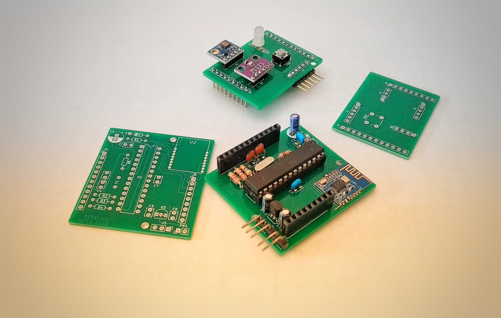

Condivido esclusivamente la foto della mia discussione di laurea magistrale. (2025)
Altri contenuti non saranno pubblicati per motivi di ricerca, almeno per il momento.
Wellbeing Intelligent Supportive pendant for Elder (WISE)
WISE (2024) è un dispositivo indossabile e connesso per anziani in casa con difficoltà motorie, ipoacusia e amnesia. Esso colma una lacuna nelle tecnologie assistive attuali integrando tutte le sue funzionalità. Rileva le cadute e invia richieste di assistenza all'app del tutore. Riconosce i suoni di citofono e telefono, illuminandosi di verde o blu, e ricorda l’assunzione di farmaci ad orari impostati lampeggiando di rosso. Include anche un pulsante di emergenza per comunicazioni istantanee sull’app. Questo dispositivo è stato presentato al Maker Faire 2024 (Roma) insieme al mio team.
Maggiori informazioni sul progetto
Personal Meteo


Personal Meteo è un sistema embedded progettato (2022) per creare una stazione meteo portatile in grado di monitorare parametri fondamentali come temperatura, pressione atmosferica e radiazioni UV. Il sistema è composto da due PCB: uno di controllo, che ospita il microcontrollore Atmega328p e un modulo BLE, e l'altro, una scheda che si sovrapporre in modo modulare, dotata dei sensori per rilevare i parametri meteo. I dati raccolti vengono inviati in tempo reale a un'app mobile sviluppata appositamente, che consente di visualizzare e monitorare i dati meteo direttamente dal proprio telefono.
LoRa Station
LoRa Station (2021) è un prototipo per il monitoraggio della temperatura e della qualità dell'aria in ambienti ostili, come le industrie con forni ad alta temperatura.
Il sistema utilizza un trasmettitore basato su microcontrollore STM32L0 con comunicazione LoRa. La temperatura viene misurata tramite una sonda RTD con circuito di condizionamento del segnale, mentre il Gas di Petrolio Liquefatto (GPL) viene rilevato con un sensore MQ-9. L'alimentazione è fornita da un circuito lineare stabilizzato a 5V. I dati raccolti vengono inviati al ricevitore.
Questi sono risultati di un test visualizzati su MATLAB dal ricevitore, modificando in ordine cronologico la concentrazione di gas e la temperatura in prossimità del sistema trasmettitore.
Green Automated Telemetric Entrance (GATE)
GATE (2019) è un sistema di automazione domestica esterna basato su ESP8266, che gestisce l'apertura di un cancello battente tramite servomotori. Il controllo avviene via app sviluppata con Flutter tramite modulo BLE o mediante scansione di un transponder RFID. Integra fotocellule IR e un sistema di monitoraggio remoto per temperatura, umidità e luminosità.
L'impianto di illuminazione esterna è ecosostenibile, alimentato da tre pannelli fotovoltaici inclinati a 45° sulle pareti della recinzione e dotato di un sistema crepuscolare automatico. Questa configurazione ottimizza l'efficienza energetica in abitazioni con un'esposizione favorevole.
Questi sono risultati di un test visualizzati su ThingSpeak.
Controllo motore brushless 24V 6A
Durante l'esperienza di alternanza scuola-lavoro presso Optimares S.r.l. (2018), ho progettato un driver per il motore di una poltrona aeronautica con specifiche 24 V e 6 A, gestito da un microcontrollore (Arduino in questa applicazione). Il sistema consente di eseguire e monitorare il numero di test ciclici prefissati sul movimento dell'attuatore. Ho progettato un PCB a due layer con un ponte H composto da transistor NPN e PNP, mentre per garantire la potenza necessaria ho utilizzato transistor Darlington e diodi di inversione per proteggere il motore.
DALEK
Il DALEK è una riproduzione in legno di una razza aliena della serie televisiva Doctor Who, presentata al Lucca Comics 2018. Il sistema è automatizzato grazie a un microcontrollore Arduino Nano e alimentato da una batteria al piombo da 12 V e 1,1 Ah. È dotato di due motori a corrente continua e un driver pilotati da un telecomando a infrarossi, che consente di gestire i movimenti: avanti, indietro, stop, destra e sinistra. Durante la marcia, in intervalli di tempo, vengono riprodotti suoni digitali della "voce" del DALEK e le sue pareti si illuminano in maniera alternata grazie a un circuito NPN che permette il multiplexing.
I PCB mostrati sono alcuni dei progetti sviluppati durante l'ultimo anno del corso di diploma tecnico. (2017-2018)
Il primo circuito in alto controlla un motore passo-passo unipolare a 5 V e 400 mA, utilizzando il microcontrollore PIC16F88 programmato in C per la logica di controllo. È dotato di 2 pulsanti per gestire le modalità, un trimmer per regolare la velocità, un dip-switch a 4 posizioni per selezionare il programma (modalità di rotazione), e 4 LED per visualizzare l'alimentazione delle fasi e simulare la rotazione del motore.
Il secondo circuito è un sistema automatizzato, basato sul microcontrollore PIC16F88 programmato in C, misura la temperatura ambientale tramite una sonda Pt100, simulata da un partitore variabile di resistenze, che genera un segnale analogico da compensato da due amplificatori operazionali in configurazione differenziale in cascata. Il range di misura è 0-200 °C, con i valori memorizzati e visualizzati su tre display a 7 segmenti a catodo comune. Inoltre, la visualizzazione include un cambio di scala automatico da 99.9 °C a 100 °C. L'intero sistema è alimentato a 5V.
Il terzo circuito è un amplificatore audio compatto, ideale per dispositivi portatili o sistemi a bassa potenza. Alimentato tra 5 e 12 Volt, supporta un microfono e un altoparlante da 4-8 Ohm con una potenza di circa 2 Watt. Utilizza l'integrato TBA820M, un amplificatore audio in classe AB che offre una potenza di uscita moderata, adatta a piccole applicazioni audio.
Il primo circuito in alto è un metro a distanza, utilizzando un microcontrollore PIC16F88 programmato in C. È dotato di un sensore a ultrasuoni
Il secondo circuito
Il terzo circuito